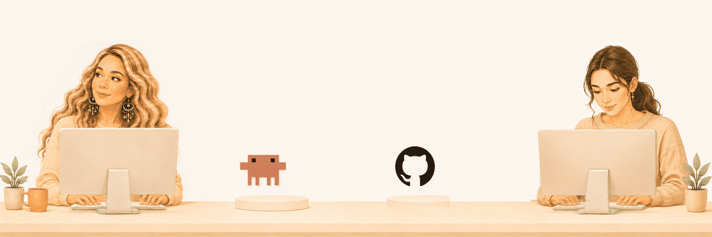

Kristina Aquila
AI Web Designer & Web Developer & Illustrator · Building AI Workflows & Automation
I use AI to design websites and illustrations that don't feel AI-made — authentic, memorable, and impossible to scroll past.


What I do
- Landing pages: a full single-page site, from the first idea through a finished, responsive build.
- Websites: multi-page sites that stay consistent in structure, style, and feel from page to page.
- Illustrations: custom AI-assisted illustrations with their own mood and art direction, made specifically for your project.
Selected projects
| Project | What it is |
|---|---|
| Ember | An interactive piece where a neural sphere burns down and rises again like a phoenix, timed to the sound of a deep tuning fork. |
| Dreamboard | A lightweight visual editor for building your own vision board: goals, dreams, and inspiration in one place. |
| Alex Neon | A neon-lit portfolio promo page designed to the client's brief, with an interactive neuro-animation to keep visitors hooked. |
| Mikhail Orlov | A no-frills, practical one-page CV portfolio for a backend developer: one clean, calm scrolling sheet. |
How the work goes
- I collect the meaning. Piece by piece, I gather what matters and surface the value you bring — even the parts you don't always see yourself.
- A design concept. I turn that direction into a focused concept and build the first version. If it clicks, we move forward. If not, I can adjust the concept to fit what you need.
- Two rounds of edits. I refine the work based on your feedback. Two rounds are included in the package. I'm always around if you want more changes later, for an extra fee.
- The finished site. You get the complete, polished website with all source files, code, and assets included. Hosting on my end can be arranged separately, for an extra fee, if you'd like.
Contribution sky